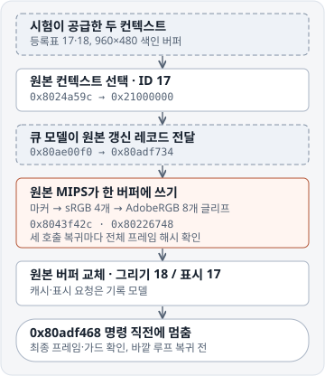

실행 범위

시험은 로케일 0, sRGB 포커스, 버퍼 ID 17·18의 등록표와 960×480 합성 RAM을 공급했습니다. 원본 코드가 활성 컨텍스트를 선택하고 갱신 레코드를 만들었습니다. 큐 모델은 그 레코드 [128, 1, 0, 0]를 원본 소비자에게 전달했습니다. 이후 같은 상태에서 두 옵션의 속성·텍스트와 마커 호출을 실행했습니다. 실행 기록 · 종료 직전 관측값
- 실행한 경로 컨텍스트 선택
0x8024a59c, 갱신 요청0x80ae00f0과 소비0x80adf734, 두 옵션의 속성0x8024bf9c및 텍스트0x8024928c, 글리프 축소0x80226748, 마커0x8043f42c, 버퍼 교체0x8043ca4c. - 대체한 경계 큐 전달·대기, 잠금, 할당, FileX, 버퍼 주소·크기 조회를 모델로 제공했습니다. 캐시와 표시 게시 요청은 인수만 기록했습니다. 화면 지우기·선·나머지 아이콘과 제목·도움말 등은 픽셀 쓰기를 생략했습니다.
- 멈춘 지점 두 번의 그리기 순회가 반환하고, 새 그리기 ID 18과 표시 ID 17이 설정된 뒤
0x80adf468명령 직전에 멈췄습니다. 이 명령과 바깥 소비 루프 복귀0x80adf980는 실행 범위 밖입니다. 실제 부팅 시 ID 17·18 생성, 전체 화면 합성, 팔레트의 RGB 값과 LCD 출력은 미확인입니다.
픽셀과 버퍼 교체
| 원본 호출 복귀 | 이번 호출 쓰기 | 누적 변경 |
|---|---|---|
마커 0x25 · 0x80acdf50 | 330바이트 | 330바이트 |
sRGB · 0x802493ec | 2,464바이트 | 2,794바이트 |
AdobeRGB · 0x802493ec | 4,881바이트 | 7,675바이트 |
마커는 ELF 가상 주소 0x808aee78의 296바이트 RLE를 사용했습니다. 텍스트는 ELF의 옵션별 로케일 0 descriptor와 패키지 오프셋 0x9d1ac0의 130,886바이트 LatinFont를 사용했습니다. 48×48 속성 요청을 거친 12개 글리프는 높이를 유지하고 가로로 축소했습니다. 최종 프레임과 마지막 그리기 체크포인트의 SHA-256은 2dcde64321668521e62bf6b510985559039d5a1e7d4dc0da8cfefeae5a2a9b6e입니다. 보조 프레임은 초기값을 유지했고, 두 프레임과 마커 임시 버퍼 양옆의 8바이트 가드 총 6개도 일치했습니다. 프레임·가드 기록
원본은 0x21000000에서 0x21040000으로 활성 컨텍스트를 바꿨습니다. 캐시 모델에는 0x802296c8의 텍스트 요청 두 건과 0x8043ca94의 버퍼 교체 요청 한 건이 들어왔습니다. 세 요청 모두 0x20000000부터 460,800바이트를 지정했습니다. 캐시 인수와 복귀 주소
실행 기록의 범위와 의존성
원본 실행은 angr 10.0.5/VEX에서 223,407개 블록을 거쳤습니다. 기록에 적힌 Q7 코드 파일 10개의 해시는 지정 커밋과 일치합니다. 다만 그중 inspect_q7.py가 가져오는 pentax_lz.py는 실행 당시의 해시 확인 목록에서 빠져 있었습니다. 이번 글꼴 읽기는 그 디코더를 호출하지 않지만, 당시 모듈 바이트를 별도로 확인했다는 뜻은 아닙니다. 아래 빠른 검증기는 Q7 모듈을 불러오지 않고, 기록된 실행과 원본 자원에서 독립 계산한 프레임을 대조합니다. 의존성 감사와 해시
검증 명령
python -B tools/check_ui_render_chain.py fwdc603p.bin main-expanded.elf사용자가 별도로 확보한 Q7 1.01 패키지와 분석 ELF가 필요합니다. ELF를 준비하는 명령은 Q7 저장소의 디코더와 ELF 생성 도구에서 확인할 수 있습니다. 검증기는 네 입력의 SHA-256과 ELF 코드 9개 구간을 확인한 뒤, 마커와 글리프를 다시 계산해 세 체크포인트 및 최종 프레임 해시와 비교합니다. 캐시 호출 명령, 기록된 인수와 가드도 검사합니다. 이 명령은 Python 표준 라이브러리만 사용하며 새 MIPS 실행은 하지 않습니다. 검증기와 해시 목록 · Q7 갱신 소스 근거 · 컨텍스트 선택 근거 · Q7 디코더 · 분석 ELF 생성 도구